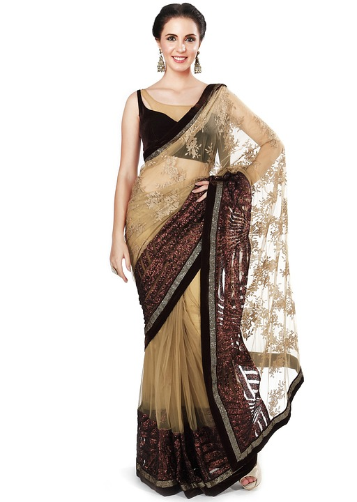

Growing up I wore a lot of Indian traditional cloths. Many assume that it is difficult to get into or out of Indian clothes, and that is true but thgey're also not that bad onces you actually get used to them.
One of my favorite and embarrassing childhood memory is how my cousin and I attempted to put on something called a "saree", while it wasn't horrible, it was very claer that her and I needed to have more practice. My point is, yes they're complicated but they're also fun, but you have to know what type of saree or other type of clothes your're wearing in order to put on correctly and not look like a clown.
So today, I wil explain the agony that comes with putting a saree on and how to put one on before you go and make a fool of yourself by having all the aunties and cousins tell you that you put it on wrong.

One of the most common traditional clothes in Indian culture, and in my opinion, most commonly worn by married women. As a child, I remember thinking that only married women wore these saree and sttll did until I've been proven wrong recently... Sarees come in a variety of colours and patterns, one of the most common rules of buying a saree is to avoid stiff fabric as they can be very hard to do the pleats and pleats are very important to make the saree look nice. A good fabric for the blouse would be cotton, as they are soft and in summer, they're typically the best choice but do not pair a cotton blouse with a cotton saree. Chiffon or Gourgette drapes are typically the better choice to pair with a cotton blouse.
Saree are, in basic terms, a sheet of cloth... at least that's what I think of when I think of saree but in actuality they consist of a drape ranging from 4.5 to 8 meters (5-9 yards) in length and 60 to 120 cm in breadth. They also consist of a fitted bodice called a "choli and a blouse. For formal occasions, it is recommended that you wear a suble, muted type but for offices and workplaces, it is recommended that you wear a solid shade or colour with no patterns along the pallu (trail in the back) as they seem more "businesslike".
It is recommended that before you attempt to put one on, you should always watch a tutorial (or some, if you need it) and always, always have someone to help you put the saree on, it will be much easier.
Now onto the intructions!
